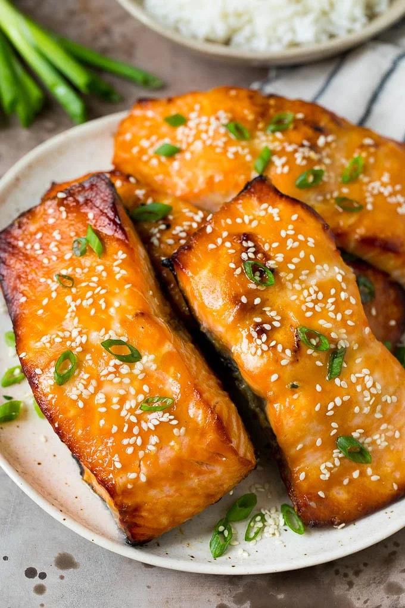

Miso Salmon

Miso salmon is a classic Japanese dish and great way to prepare salmon under any context.
Quick, easy, and simple, miso salmon with rice is a great weeknight meal for when you want something good, but nothing too difficult.
This is one of my personal favorites and it never fails to hit. Let me show you how it's done the real way:
- Salmon fillet (less than 1 inch thick perferably)
- White miso
- Shoyu (soy sauce)
- Brown sugar
- Mirin
- Roasted sesame oil (just a bit)
- Garnish:
- Toasted black and white sesame seeds
- Chopped green onion
- Salt and pepper the salmon
- In a small bowl add the miso paste, soy sauce, brown sugar, rice vinegar, and sesame oil. Wisk together until smooth. Reserve 1 tablespoon of marinade.
- In a medium sized bowl add the salmon and the sauce. Let it marinade for 1-3 hours.
- Preheat oven to 375 degrees. In a large skillet or oven safe frying pan add the salmon and discard marinade. Bake for 12-15 minutes, or until fish is almost done and opaque. Brush with reserved glaze and Broil on high for 1-2 minutes until fish reaches 125-130 degrees in the center.
- Garnish with sesame seeds or green onions if desired.
Check out the source of this recipe:
The Recipe Critic